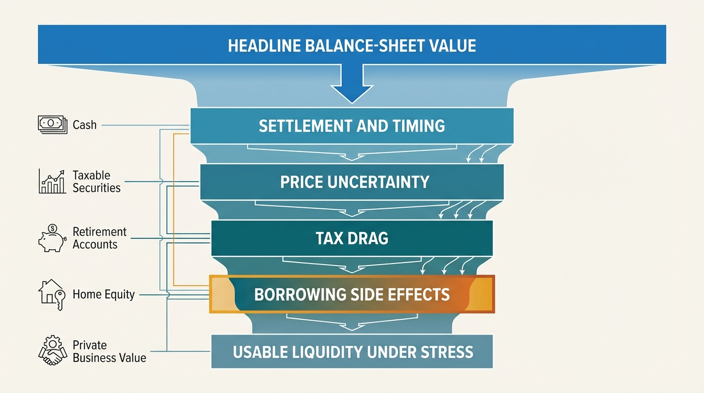
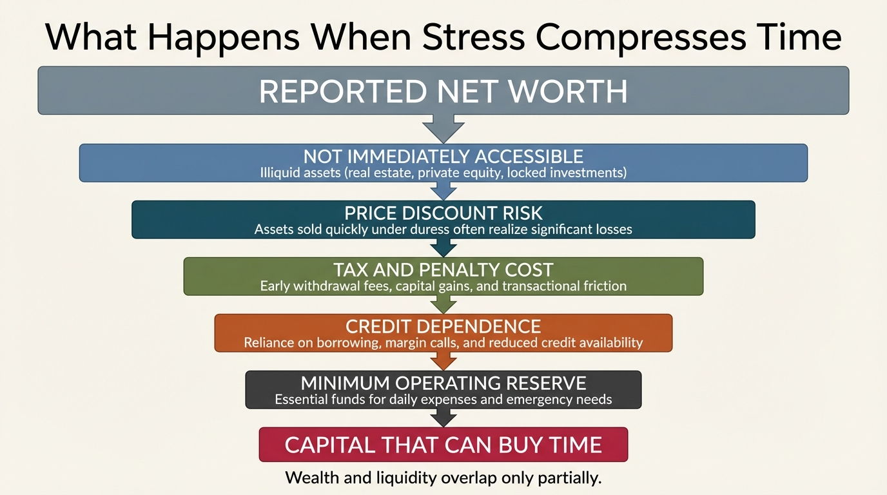

The Liquidity Illusion
The modern household rarely mistakes income for wealth. It makes a different mistake. It mistakes visible balance-sheet value for deployable liquidity. Those are not close equivalents. The relevant asset is the part of the balance sheet that can buy time without forcing a second hit through taxes, borrowing cost, asset sales, or plan damage.
The illusion persists because digital finance compresses unlike things into one number. A brokerage account, retirement balance, home equity estimate, restricted stock grant, and cash balance all appear inside the same dashboard. That presentation is psychologically powerful and analytically weak. It encourages the household to read a net-worth screen as if it were a resilience report. It is not a resilience report.
Core thesis: liquidity has at least four dimensions: conversion speed, price certainty, tax friction, and balance-sheet side effects. The liquidity illusion appears when a household treats quoted value or borrowing capacity as though it were owned, low-friction cash capacity. That confusion usually stays hidden until stress compresses time.

Why Balance-Sheet Comfort Can Be Misleading
The Federal Reserve's 2025 household well-being report showed that 63 percent of adults said they would cover an unexpected $400 expense with cash or its equivalent, and 54 percent said they had rainy-day funds covering three months of expenses. Those numbers are not disastrous. They still imply that a large minority of adults lacks immediate shock capacity even for small or moderate disruptions. They also say nothing about larger events such as relocation, legal costs, family care, or a long income interruption.
The 2022 Survey of Consumer Finances gives a second warning. Transaction accounts were nearly universal, but the conditional median balance was only $8,000. That figure describes holdings, not durability. Eight thousand dollars can be meaningful for routine volatility and still be trivial against a six-month disruption in a high-cost city. The point is not that households hold no liquid assets. The point is that headline balances often defend much less than people assume.
The older Federal Reserve note on liquid savings remains useful because it frames the question correctly. Liquid savings are not a prestige metric. They are what prevent a temporary shock from becoming a structural setback. A balance sheet that looks strong in aggregate can still fail this test if its apparent value sits behind taxes, timing, underwriting, or forced-sale risk.
Four Tests Of Real Liquidity
The first test is conversion speed. Cash and near-cash instruments clear this test. Taxable securities often clear it in calm conditions, but even there settlement timing, market hours, and liquidation discipline matter. Real estate, retirement accounts, concentrated stock, and private-business value usually do not clear it on the same horizon.
The second test is price certainty. A dollar in insured cash is still a dollar when stress arrives. A dollar in quoted equity value may not be. The third test is tax friction. Retirement assets and appreciated positions can be valuable while still being expensive sources of present cash. The fourth test is balance-sheet side effects. A securities-backed loan or home-equity line may solve an immediate cash problem while adding a second vulnerability through interest cost, covenants, or refinancing dependence.
Once these four tests are applied, the comfortable-looking balance sheet often shrinks. The household still has wealth. It simply has less low-friction, decision-preserving liquidity than the dashboard suggested.
Collateral Access Is Not Owned Liquidity
One of the most persistent errors is to treat collateral access as though it were the same thing as cash reserves. It is not. Borrowing against assets can be rational. It is still rented liquidity rather than owned liquidity. The distinction matters because the household has converted one problem into two: an immediate funding need and a new liability structure.
This distinction became more visible once rates stopped being negligible. Cheap-money periods encouraged the belief that almost any appreciating asset could serve as a frictionless liquidity source. Higher-rate conditions restore the real cost. A line of credit, a margin loan, or a home-equity draw is now visibly a financing decision, not a neutral conversion of stored value into spendable cash.
Collateral-based liquidity is also state-dependent. If income weakens, asset prices fall, or lending standards tighten, the access path deteriorates precisely when it is most needed. That is not incidental. It is the reason emergency reserves and low-friction taxable buffers exist as separate layers in a sound household plan.

Optionality Is The Right Outcome Metric
The real value of liquidity is not compliance with emergency-fund folklore. It is optionality. A liquid household can wait for a better job, negotiate harder, relocate, cover family obligations, or absorb a bad quarter without dismantling the future plan. An illiquid household, even a wealthy one, makes decisions on deadline.
This is why the topic belongs with several adjacent WealthMeter themes. The career optionality gap is often a liquidity problem in disguise. The mortgage lock-in trap becomes more binding when home equity is mistaken for flexible capital. The asset-rich, cash-poor paradox is a direct expression of the same structure. The liquidity illusion is the broader diagnostic frame sitting above those manifestations.
How To Measure Liquidity More Honestly
- Separate immediate reserves from market liquidity. Cash and Treasury-like holdings should not be grouped with risk assets.
- Apply friction haircuts. Discount taxable assets for realization cost, retirement assets for penalties or plan damage, and collateral access for interest and covenant risk.
- Measure months of full-spend defense. Use actual household outflow rather than a symbolic emergency number.
- Run a three-shock scenario. Model lower income, lower asset prices, and tighter credit in the same period.
- Distinguish owned from rented liquidity. Cash is owned. Credit access is conditional. The planning treatment should be different.
A useful household report would therefore show at least four bands: immediate reserves, low-friction marketable assets, conditional collateral access, and locked or event-dependent capital. That format is less flattering than a single net-worth total. It is also closer to the question that matters under pressure: what part of the balance sheet can buy time without damaging the future plan?
Known, Inferred, And Unknown
| Category | Assessment |
|---|---|
| Known | A large minority of U.S. adults still does not rely on cash or its equivalent for even a modest unexpected expense. |
| Known | The conditional median transaction-account balance in the 2022 Survey of Consumer Finances was modest relative to the cost of a serious disruption. |
| Known | Households across much of the wealth distribution hold substantial value in real estate and other assets that are not immediately spendable. |
| Inferred | Aggregation dashboards and collateral-based credit products make households more likely to overstate practical liquidity relative to real shock capacity. |
| Unknown | How much reported household financial comfort would remain after applying consistent timing, tax, and stress haircuts to real-world balance sheets at scale. |
The Practical Correction
The correction is not to hold everything in cash. That would sacrifice long-run return. The correction is to match each balance-sheet layer to the problem it is supposed to solve. Cash handles immediacy. Diversified taxable capital handles medium-horizon flexibility. Retirement accounts handle long-horizon solvency. Home equity and private-business value support strategic wealth rather than routine defense. Once those layers are kept separate, the liquidity illusion loses most of its power.
The relevant question is therefore not, "How large is the household balance sheet?" The more useful question is, "Which part of the balance sheet can absorb stress without forcing a second concession?" That is the quantity that governs resilience, bargaining power, and strategic freedom.
Further Reading Inside The Site
This article connects directly to The Asset-Rich, Cash-Poor Paradox, The Mortgage Lock-In Trap, and The Career Optionality Gap. Together they show how weak liquidity design narrows real-life optionality long before a household looks poor on paper.
Source List
Board of Governors of the Federal Reserve System. Report on the Economic Well-Being of U.S. Households in 2024: Savings and Investments. Published May 2025.
Board of Governors of the Federal Reserve System. Changes in U.S. Family Finances from 2019 to 2022. Published October 2023.
Bhutta N, Dettling LJ. Money in the Bank? Assessing Families' Liquid Savings Using the Survey of Consumer Finances. Federal Reserve FEDS Notes. 2018.
Jones J, Neelakantan U. Portfolios Across the U.S. Wealth Distribution. Richmond Fed Economic Brief. 2023.